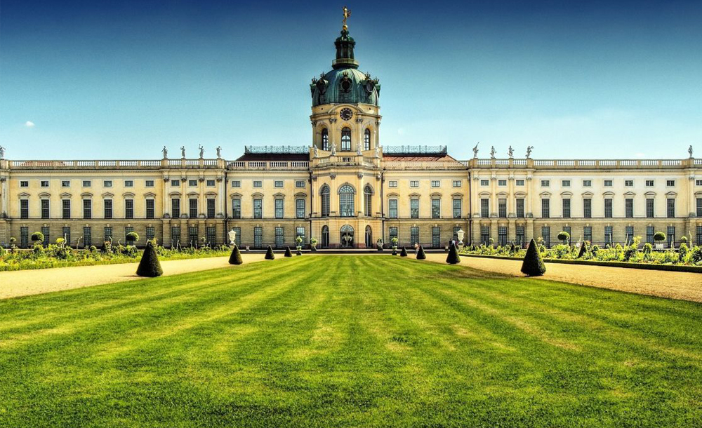

Memorial dos Judeus Assassinados da Europa : Comemora a infeliz perda de seis
milhões de vidas judias às mãos dos nazis.
Monumento de Luther : É o maior monumento do mundo para a reformação.
Monumento de Goethe-Schiller : Simboliza a amizade entre homens e o espírito de
Weimar desde 1857.
Memorial de Buchenwald : Em 1958, o governo da Alemanha oriental ergueu um memorial
para comemorar a resistência comunista.
Monumento de Karl Marx : Em 1953, a Alemanha oriental renomeou Chemnitz como
"Karl-Marx-Stadt" (cidade de Karl Marx).
Monumento de Beethoven : A cidade de Bonn dedicou uma estátua de bronze ao seu mais
famoso filho, em 1845.
Monumento de Hermann : Comemora Arminius (Hermann), um chefe de guerra germânico, e a sua
vitória sobre tropas romanas em 9 A.D.
"Walhalla Hall of Fame" : Honra celebridades distinguidas na história alemã.

Memorial dos Judeus Assassinados da Europa

"Alexanderplatz"

Arco de Brandenburg

Monumento de Goethe-Schiller

Catedral de Berlin

Memorial de Buchenwald

"Berliner Dom"

Monumento de Karl Marx

Memorial da Muralha de Berlim

Monumento de Beethoven

Palácio de Charlottenburg

Monumento de Hermann

Castelo de Neuschwanstein

Monumento da Batalha das Nações

"Alexanderplatz"

Monumento de Niederwald

"Walhalla Hall of Fame"
Memorial dos Judeus Assassinados da Europa : Comemora a infeliz perda de seis
milhões de vidas judias às mãos dos nazis.
Monumento de Luther : É o maior monumento do mundo para a reformação.
Monumento de Goethe-Schiller : Simboliza a amizade entre homens e o espírito de
Weimar desde 1857.
Memorial de Buchenwald : Em 1958, o governo da Alemanha oriental ergueu um memorial
para comemorar a resistência comunista.
Monumento de Karl Marx : Em 1953, a Alemanha oriental renomeou Chemnitz como
"Karl-Marx-Stadt" (cidade de Karl Marx).
Monumento de Beethoven : A cidade de Bonn dedicou uma estátua de bronze ao seu mais famoso
filho, em 1845.
Monumento de Hermann : Comemora Arminius (Hermann), um chefe de guerra germânico, e a sua
vitória sobre tropas romanas em 9 A.D.
Monumento da Batalha das Nações : Dedicado à derrota de Napoleão em 1813, na batalha de
Leipzig.
"Walhalla Hall of Fame" : Honra celebridades distinguidas na história alemã com bustos e
quadros feitos com mármore.